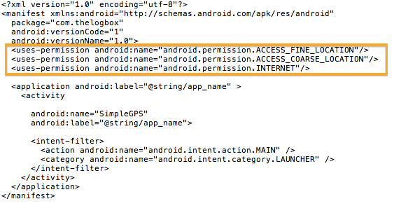

GEOLocation is a major fuctionality of a mobile device. There are plenty of practical uses for this nifty feature, apart from stamping where you were when you took that photo.
This feature makes it possible to know where you are during those situations when you are lost. A powerful enough app can tell you how far you are from an intended destination. These are just a few use cases for this feature. This is the reason why you need to know how to code with it.
CURRENT LOCATION
To get information on the current location, you need to do the following;
- Allow the use Location based service on the device. The user has to do this, there is no way to enable the service programatically
- Add permissions on the Manifest file
- Use the LocationManager and other related classes on the android.location.* package
To allow the use of **Location Based Service on the device
- Go to settings
- Go to Location and Security
- Choose the appropriate settings (use wireless networks and/or use gps sattelites)
Note that this needs to be performed by the user. This means you, as a developer, cannot stealthily perform these activities without the user permission. Your application needs to be explicit about this fact on the terms of service.
On the application side, you need to make some changes on *AndroidManifest.xml**. The changes you need to make are highlighted.

SAMPLE CODE
/*
BSD License: Copyright (c) 2009-2012 Ted Hagos
All rights reserved.
License text: http://thelogbox.com/source-docs/software-license.txt
*/
// GPSView.java
package com.thelogbox;
import android.app.Activity;
import android.os.Bundle;
import android.widget.LinearLayout;
import android.widget.TextView;
import android.content.Context;
import android.view.View;
import android.view.View.OnClickListener;
import java.util.List;
import android.location.LocationManager;
import android.location.LocationListener;
import android.location.Location;
import android.location.Criteria;
import android.location.Geocoder;
import android.location.Address;
import android.util.Log;
class GPSView extends LinearLayout implements OnClickListener, LocationListener {
Context ctx = null;
TextView tv = null;
String TAG = null;
LocationManager locm = null;
Location loc = null;
Geocoder geo = null;
List address = null;
Address addr = null;
public GPSView(Context ctx) {
super(ctx);
tv = new TextView(ctx);
this.ctx = ctx;
TAG = getClass().getName();
setOnClickListener(this);
addView(tv);
}
public void onClick(View v) {
locm = (LocationManager) ctx.getSystemService(ctx.LOCATION_SERVICE);
loc = locm.getLastKnownLocation(locm.getBestProvider(new Criteria(),false));
geo = new Geocoder(ctx);
Log.v(TAG, "Got Location");
String msg = tv.getText().toString();
if (loc != null) {
double lon = loc.getLongitude();
double lat = loc.getLatitude();
try {
address = geo.getFromLocation(lat, lon, 1);
}
catch(Exception e){
Log.v(TAG, e.getMessage());
}
addr = address.get(0);
Log.v(TAG, "got Lat and Lon and geocode");
msg += "\n";
msg += "LAT: ";
msg += String.valueOf(lat);
msg += " | LON: ";
msg += String.valueOf(lon);
msg += " | Country: ";
msg += addr.getCountryName();
msg += ", ";
msg += addr.getLocality();
msg += ", ";
msg += addr.getPostalCode();
msg += "| ";
for (int i = 0; i < addr.getMaxAddressLineIndex(); i++) {
msg += addr.getAddressLine(i) + " ";
}
tv.setText(msg);
}
else {
Log.v(TAG, "No location");
tv.setText("No Location");
}
}
public void onLocationChanged(Location location) {
Log.v(TAG, "location changed");
}
public void onStatusChanged(String provider, int status, Bundle bundle){
Log.v(TAG, "status changed");
}
public void onProviderEnabled(String provider) {
Log.v(TAG, provider + " is enabled");
}
public void onProviderDisabled(String provider) {
Log.v(TAG, provider + "is disabled");
}
}
public class SimpleGPS extends Activity {
@Override
public void onCreate(Bundle savedInstanceState) {
super.onCreate(savedInstanceState);
setContentView(new GPSView(this));
}
}CODE WALK THROUGH
-
Get an instance of a LocationManager object, this can be done by calling the getSystemService() method of the Application Context
-
Call the getLastKnownLocation() method of the location manager object to get a Location object
-
From the location object, you can extract the longitude and latitude information, both these methods will return a double data type. At this point, you already have latitude and longitude info—you can stop here if that is all you need. If on the other hand, you need to get a human readable address, like Country, Locality etc. Use the Geocoder class and do a reverse geocoding—continue to step 4
-
Create an instance of Geocoder
-
Call the getFromLocation(latitude, longitude, 1) of the geocoder object. The third parameter is the maximum number of results (addresses) that you wish to extract. In the example, we are only interested in 1 address, hence the third parameter is an an int value 1
-
getFromLocation() will return a java.util.List object, it will have only 1 element (because the third parameter that was passed instructed it to return only 1 value). Extract that element, it will be an android.location.Address object
-
Extract the members of the Address object to get the address lines, country name and locality. There are a lot more information on the address object, just look up the API if you need to extract more information
NOTE: The LocationListener interface is not necessary if you simply want to get the current GPS information on the device. You will need the the callbacks of the LocationListener if you want something to happen in response to the following;
- When the location has changed – onLocationChanged()
- When there is change on status of the GPS provider – onStatusChanged()
- When the GPS provider is disabled – onProviderDisabled()
- When the GPS provider is enabled – onProviderEnabled()